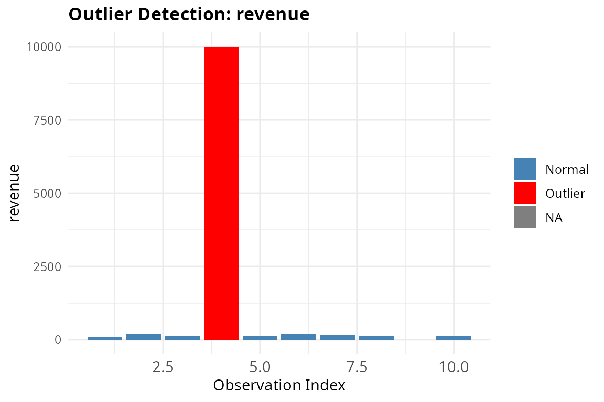

Introduction to finclean package
intro-to-finclean.RmdWhat is finclean?
finclean is an R package that helps you clean and
diagnose messy financial data. Real-world financial datasets often have
inconsistent formats, missing values, and suspicious entries that need
to be addressed before any analysis. This vignette walks through each
function using the built-in sample dataset.
Load the Dataset
finclean comes with a built-in sample dataset
finclean_sample that contains common data quality issues
found in financial data — messy currency strings, inconsistent fiscal
year formats, account name variations, outliers, and missing values.
data(finclean_sample)
finclean_sample
#> period account amount revenue expenses
#> 1 FY23 Rev. $1,234.56 100 50
#> 2 Q1 2023 REVENUE €500 200 80
#> 3 2023-Q2 Expenses (1,200) 150 200
#> 4 Q1FY23 EXP -$300.00 10000 60
#> 5 FY2023 Net Inc. $98,000 130 90
#> 6 Q3-2023 COGS $1,500 170 50
#> 7 2024 cost of goods $2,000 160 75
#> 8 FY24 assets $99,999,999 140 65
#> 9 Q2 2024 CASH (750.00) NA 85
#> 10 Q4FY24 Equity $3,200 120 55Parse Currency Strings
Financial data often contains currency values stored as strings with
symbols, commas, and parentheses. parse_currency() converts
these into clean numeric values. Parentheses-style negatives like
"(1,200)" are correctly converted to
-1200.
parse_currency(finclean_sample$amount)
#> [1] 1234.56 500.00 -1200.00 -300.00 98000.00 1500.00
#> [7] 2000.00 99999999.00 -750.00 3200.00Standardize Fiscal Year Formats
Fiscal year labels are often inconsistent across teams and systems.
standardize_fiscal_year() normalizes all formats into a
consistent FY#### or FY####-Q# output.
standardize_fiscal_year(finclean_sample$period)
#> [1] "FY2023" "FY2023-Q1" "FY2023-Q2" "FY2023-Q1" "FY2023" "FY2023-Q3"
#> [7] "FY2024" "FY2024" "FY2024-Q2" "FY2024-Q4"Normalize Account Names
Account names are frequently abbreviated or capitalized differently
by different people. normalize_accounts() maps all
variations to a single standardized label. Note that if you supply a
custom_map, it will completely replace the built-in
mapping.
normalize_accounts(finclean_sample$account)
#> [1] "Revenue" "Revenue" "Expenses" "Expenses" "Net Income"
#> [6] "COGS" "COGS" "Assets" "Cash" "Equity"Flag Outliers
flag_outliers() detects suspicious values in a numeric
column using either the IQR method (default) or the z-score method. It
returns a data frame with each value labeled as an outlier or not.
flag_outliers(finclean_sample$revenue)
#> value is_outlier
#> 1 100 FALSE
#> 2 200 FALSE
#> 3 150 FALSE
#> 4 10000 TRUE
#> 5 130 FALSE
#> 6 170 FALSE
#> 7 160 FALSE
#> 8 140 FALSE
#> 9 NA NA
#> 10 120 FALSEAudit the Full Dataset
Instead of checking each column individually,
audit_report() scans the entire data frame at once and
returns a structured summary of missing values, duplicate counts, and
outliers for every column.
audit_report(finclean_sample)
#> column type n_missing pct_missing n_duplicates n_outliers
#> 1 period character 0 0 0 NA
#> 2 account character 0 0 0 NA
#> 3 amount character 0 0 0 NA
#> 4 revenue numeric 1 10 0 1
#> 5 expenses numeric 0 0 2 1Visualize Outliers
plot_outliers() generates a bar chart that highlights
outlier observations in red, making it easy to spot anomalies at a
glance.
plot_outliers(finclean_sample, column = "revenue")
#> Warning: Removed 1 row containing missing values or values outside the scale range
#> (`geom_bar()`).